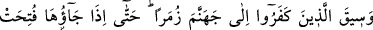
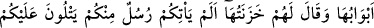
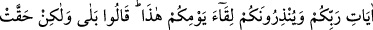
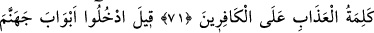
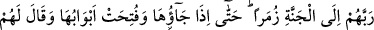
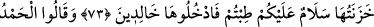
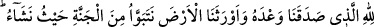
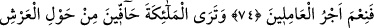
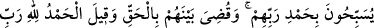
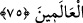

SELAM SİZE!
TERTEMİZ GELDİNİZ
71. O inkâr edenler, bölük hâlinde cehenneme sürülür. Nihâyet oraya geldikleri
zaman kapıları açılır, bekçileri onlara: Size, içinizden Rabbinizin âyetlerini okuyan
ve bugüne kavuşacağınızı ihtar eden peygamberler gelmedi mi? derler. “Evet
geldi” derler ama, azap sözü kâfirlerin üzerine hak olmuştur.
72. Onlara: İçinde ebedî kalacağınız cehennemin kapılarından girin;
kibirlenenlerin yeri ne kötü! denilir.
73. Rablerine karşı gelmekten sakınanlar ise, bölük bölük cennete sevk edilir,
oraya varıp da kapıları açıldığında bekçileri onlara: Selam size! Tertemiz geldiniz.
Artık ebedî kalmak üzere girin buraya, derler.
74. Onlar: Bize verdiği sözde sadık olan ve bizi, dilediğimiz yerinde oturacağımız
bu cennet yurduna vâris kılan Allah’a hamdolsun. İyi amelde bulunanların mükâfatı
ne güzelmiş! derler.
75. Melekleri görürsün ki, Rablerine hamd ile tesbih ederek Arş’ın etrafını
kuşatmışlardır. Artık aralarında adaletle hükmolunmuş ve “alemlerin Rabbi olan
Allah’a hamdolsun” denilmiştir.
“O inkâr edenler,” önderleriyle birlikte “bölük hâlinde cehenneme sürülür.”